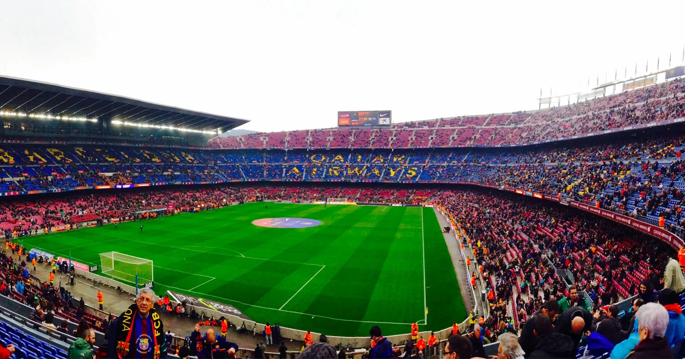

Stadion
Oud stadion
Camp Nou
Het Camp Nou-stadion van FC Barcelona wordt momenteel gerenoveerd en gemoderniseerd. De verbouwing begon in juni 2023 en kan tot wel drie jaar duren. Het stadion wordt duurzaam gemaakt en de capaciteit wordt uitgebreid tot 105.000 toeschouwers. De kosten van de verbouwing bedragen ruim 1,5 miljard euro. Na de laatste thuiswedstrijd van het seizoen 2022/2023 startte de verbouwing van Camp Nou. Het voetbalseizoen 2023-2024 werd daarom afgewerkt in het Olympisch stadion van Barcelona. Volgens de planning kan er vanaf november 2024 weer in stadion Camp Nou gespeeld worden, maar dan met ongeveer 50% van de totale capaciteit. Als alles volgens plan verloopt speelt de ploeg van Frenkie de Jong in het seizoen 2025/26 in een vol stadion.